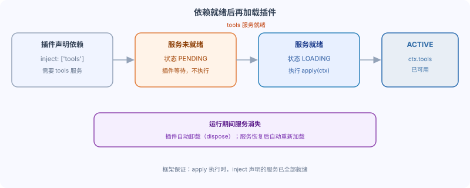

DeepSeek Harness Declared Dependencies: inject and Built-in Services
Earlier, we learned about plugins that run independently, but most plugins rely on other capabilities: tool registry, LLM, Agent.
In this section, we will introduce how to declare dependencies and how the framework ensures that dependencies are ready before apply is executed.
What is a service?
A service is a named capability that a plugin exposes to other plugins.
In Harness Among them,tools、llm、agents allYesServices, they挂loadIn ctx on:ctx.tools、ctx.llm、ctx.agents。
| Built-in service | What is it | Typical usage |
|---|---|---|
| ctx.tools | Tool Runtime | Register / Call Tools |
| ctx.llm | Large Language Model Service (LLM) | Register Adapters, Initiate Model Requests |
| ctx.agents | Agent Service | Manage Sub-agents |
Declaring dependencies with inject
If your plugin needs a service, write it into the inject array.
The framework ensures that your plugin is loaded only after these services are ready.
Example
import type { Context } from '@deepseek-ai/cordis'
export const name = 'my-tool-plugin'
// Declare dependency: requires tools service
export const inject = ['tools']
export function apply(ctx: Context) {
// By the time we get here, ctx.tools is guaranteed to be ready.
ctx.tools.register(/* ... */)
}
When apply is executed, all services declared in inject are already ready.
This is guaranteed by the framework, so you don't need to wait for anything in your code.
Dependency not ready: the plugin waits
If a service is not ready, the plugin will not execute.
Its Fiber will stay in the PENDING state, waiting for the service to appear.
In the lifecycle, PENDING means "declared, but required dependencies are not ready."

If the service never arrives, the plugin keeps waiting; it will not error out, and apply will not execute.
Required dependencies and optional dependencies
inject declares required dependencies: the plugin is not loaded when the service is absent.
If a service is optional, use an optional dependency: do not include it in inject, and query it with ctx.get() at the point of use.
Example
import type { Context } from '@deepseek-ai/cordis'
export function apply(ctx: Context) {
// The metrics service may or may not be present
const metrics = ctx.get('metrics')
// Optional chaining: skip if it doesn't exist, no error
metrics?.record('plugin_loaded', 1)
}
What happens when a service disappears
If a required service disappears during runtime (e.g., the provider is uninstalled), two things will happen.
First, plugins that depend on it will automatically dispose (release resources).
Second, when the service reappears, the plugin automatically reloads.
This prevents the plugin from calling a service that no longer exists.
Tip: This rule works with automatic cleanup—unloading triggers the disposer described in Part 8.
Summary and self-test
Use inject to declare required services, and the framework guarantees that apply is executed only after the services are ready; query optional services with ctx.get().
other extensions1. What does the inject array declare?
2. What state is the plugin in when services are not ready?
3. How should optional dependencies be declared?